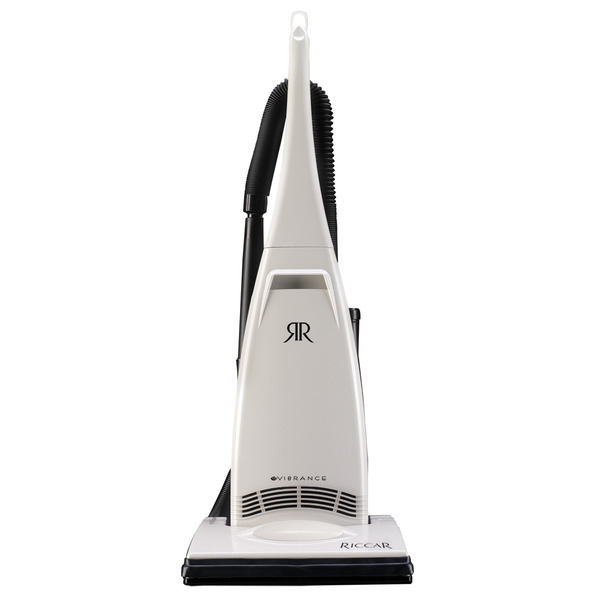
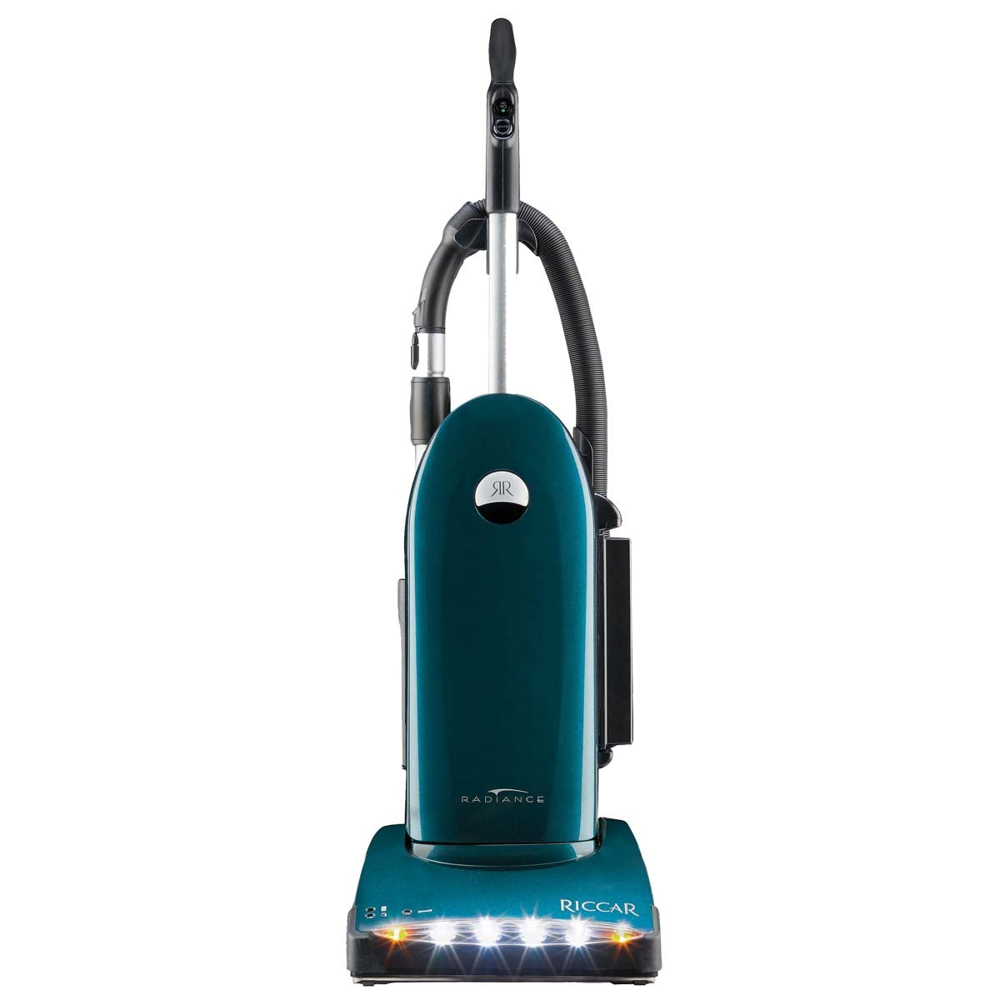
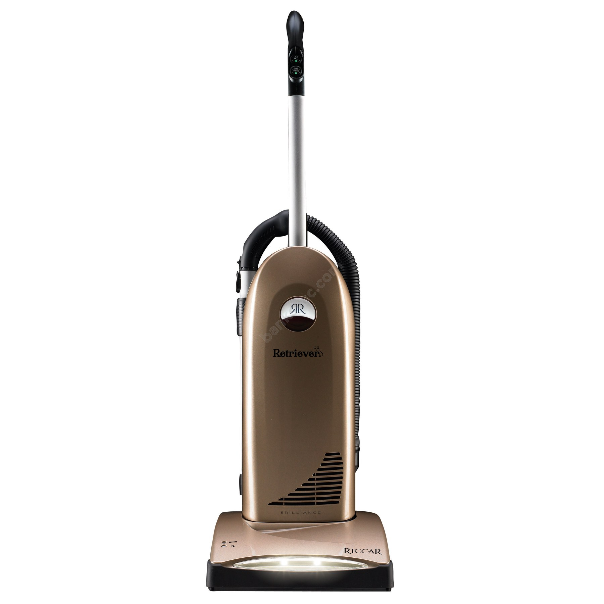
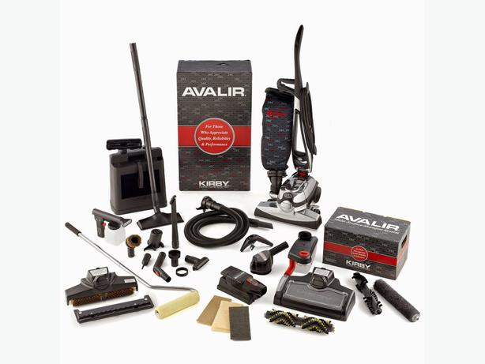

New and Used Vacuums
We offer two main brands of new and referbished machines; Kirby and Riccar. Below you can find out information about each brand, as well as some of the models that we have available. You can find other brands of used machines at our shop (2504 E. 7th Street, Joplin, MO).
Riccar
Riccar vacuums are a brand that is made in St. Charles Missouri. They offer four main machines (Vibrance, Radiance, Brilliance, and Supralite) but there are a number of choices and addons for each machine.
Vibrance
This machine is Riccar's entry level upright machine. It is a 10 Amp machine that has a steel roller with replaceable brush strips. It also featrues on board tools and attachments (duster brush, crevice tool, and upholstery tool).
Radiance
This machine is one of Riccar's 2 motor uprights. It has a three row brushroll that allows the user to remove them and choose between soft medium and hard brush strips.. It sports an external Hepa filter (which allows for a larger bag). The Radiance also has LED headlights. Other metal parts include :Metal top cord hook, release pedal, roller/rugplate, and wand.
Brilliance
The Brilliance is Riccar's entry level 2 motor vacuum. It has a metal roller with two rows of brushes. It also has a lifetime belt. Other metal features include: metal wand, top cord hook, roller/rugplate, and release pedal.
Kirby
Kirby comes out with a new machine every two years or so. They come with a three year limited warranty. We sell all models of referbished Kirby machines at our shop. If you have questions about availablity, please call the shop and we can tell you exactly what we have ready to be purchased.